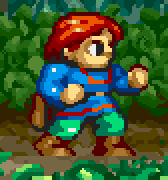
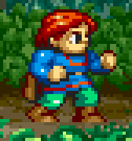
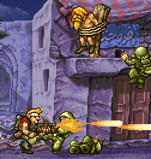
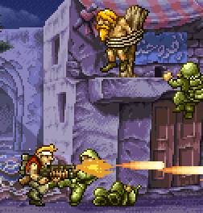

Scale2x is real-time graphics effect able to increase the size of small bitmaps guessing the missing pixels without blurring the images.
It was originally developed for the AdvanceMAME project in the year 2001 to improve the quality of old games with a low video resolution. Derivative Scale3x and Scale4x effects which scale the image of 3x and 4x are also available.
scale4x |
 scale2x |
 original |
Scale2x is used in the following OpenSource projects: AdvanceMAME ScummVM Pygame Psx Emulation Open Source Nebula Exult DosBox GnGeo Jump'n'Bump PrBoom MAMEPlus MAMEoX WinUAE TI-99/Sim Fuse VirtuaNES GEST Nestopia Open MSX FCE Ultra UFO 2000 Unreal Speccy CloneKeen ZBoy WinArcadia OpenTyrian DuneLegacy Scacle2x-Plus G'MIC
If you know other projects which use the Scale2x effect please send an email and I will add them to the list.
Scale2x has also a SourceForge page and a GitHub page. It's also mentioned in the FSF Free Software Directory and in Wikipedia.
Other interesting effects are HQx and xBR. These effects are a bit slower than Scale2x, but surely in the grasp of modern processors.
Check also the very interesting Depixelizing Pixel Art and its Multi Comparison. With modern processors you can do a lot better than Scale2x.
|  scale2x |
 original |